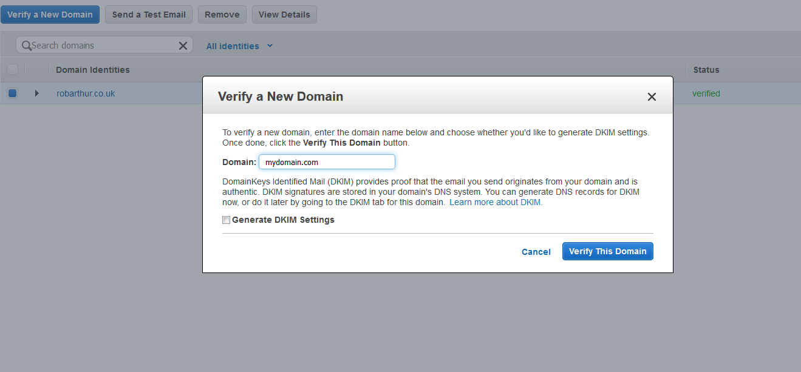
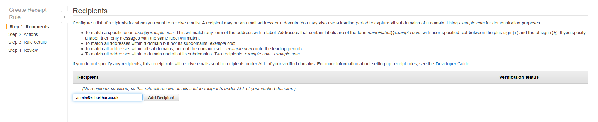
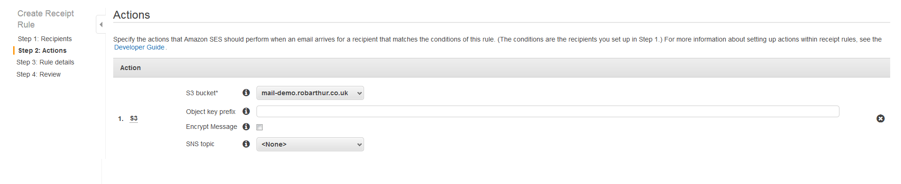
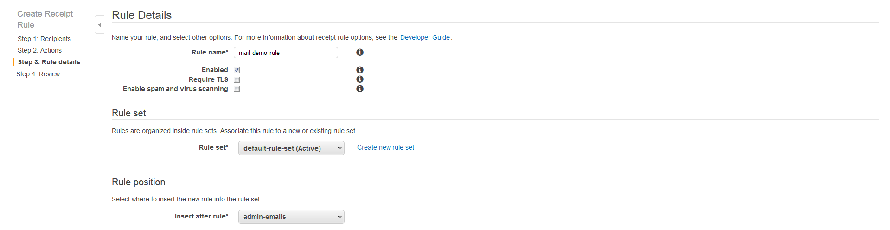
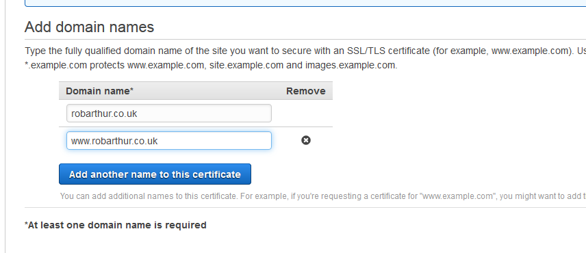
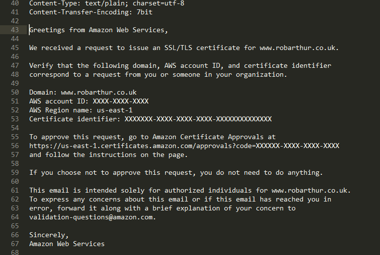

Validating Domain Ownership for SSL Certificates Using Amazon SES
Posted on Wed 20 September 2017 in Dev • 4 min read
Overview
When you request a certificate from Amazon Certificate Manager, you're required to validate ownership of the domain(s) that the certificate is valid for. This is acheived by sending a verification email to the administrative, registrant and technical contacts in the WHOIS records.
- administrator@your_domain_name
- hostmaster@your_domain_name
- postmaster@your_domain_name
- webmaster@your_domain_name
- admin@your_domain_name
But what happens if you have privacy protection such that all of the WHOIS contact information is obfuscated, and no email server setup for your domain? This is a pretty plausible situation for a website such as a personal blog, (like this one!) and that was the problem I faced when registering a certificate for this site. Enabling privacy protection for a .uk domain is a manual process for Route53, which involed raising a support case, I didn't want to undo that, to validate my certificate to then have to re-enable. I also didn't want to have to set up an expensive email server to handle a single email. The same is true for .io domains where email contact information is obfuscated by default.
Amazon Simple Email Service
There's actually a slightly roundabout, but valid way to verify ownsership of our domain and validate the certificate using Amazon Simple Email Service (SES).
SES provides the ability to send email, but crucially for this process also to receive email from a registered Route53 domain and route it to SNS, Lambda, S3 ...etc.
Lazy Disclamer
Despite all of the evangalism in the previous post about Infrastructure as Code, these are all 'clicky' instructions through the console. The reason for this is because that's how I did it, and I don't think I'll being doing it enough to make automating it worthwhile! In doing some reasearch for this I found a great article by Simon-Pierre Gingras about Veryfing SES Domains Using Cloudformation. With a good mantra in there...
If you’re using Route53 as your DNS provider, then you’re in for a treat! The SES console will offer you to add the TXT record to your Route53 hosted zone for you, by clicking the blue button ... You must resist the temptation to click that button! Do not forget the 1st commandment of Infrastructure as Code: 'Thou shalt not click the dreaded blue button'
But in this case I've given into that temptation, and I'm pushing the button.
Validating the Certificate
So to validate our certificate we need to take the following steps:
- Validate our domain in SES
- Publish MX DNS record to enable delivery to enable mail delivery to SES
- Create a rule to route messages to the
admin@our_domain.comto a S3 bucket. - Request and verify the ACM Certificate
Step 0. Pre-requisites
Before running these steps ensure you have:
- A domain registered with Route 53
- IAM user with permissions for SES Full Access and S3 Full Access. (Try and follow best practices, please don't use root!)
Step 1. Validate Our Domain in SES
Fortunately AWS makes this really easy (when you 'press the big blue button'). The first thing we want to do is assign a TXT DNS record with a verification string for our domain:

Wait for the Domain Identities Status to change to 'Verified'
Step 2. Publish MX DNS record to Route 53
Now that our domain is verified, we need to add a MX (Mail Exchange) record to our Route 53 Hosted Zone.
{kind=link}
The content of the record will depend on the AWS Region you're using for SES
| Region Name | Region Identifier | MX Record |
|---|---|---|
| N. Virginia | us-east-1 | 10 inbound-smtp.us-east-1.amazonaws.com |
| Oregon | us-west-2 | 10 inbound-smtp.us-west-2.amazonaws.com |
| Ireland | eu-west-1 | 10 inbound-smtp.eu-west-1.amazonaws.com |
Step 3. Route Admin Emails to an S3 Bucket
SES also provides a wizard that will create a S3 bucket with an appropriate bucket policy. We're going set up a rule for the admin@your_domain_name email, but this could be any of the default ones above.
Create a new rule set and a new rule as follows:
For recpient one or many of those example emails above:

For actions create a new S3 bucket:

Fill in the rule details. I've disabled spam filtering to ensure the verification email doesn't get caught in a filter:

Step 4. Request and verify the ACM Certificate
Worth mentioning at this point, that if you want to use this certificate with Cloudfront this needs to be generated in N. Virginia (us-east-1). Make sure you're working in this region while generating this certificate.
Setup all of the domains you wish to use for this certificate. This can include wildards if you want.

Review and request the certificate, then check the S3 bucket that you generated earlier.
Hopefully you should see your verification email in there, it's will be given a random unique string as the email name. Open that up and find the verficiation link.

And finally your certificate is verified! You can delete the SES setup if you want as it will cost $1/month. Or keep it and do something clever like leverage SNS to forward those emails on to your personal email address.